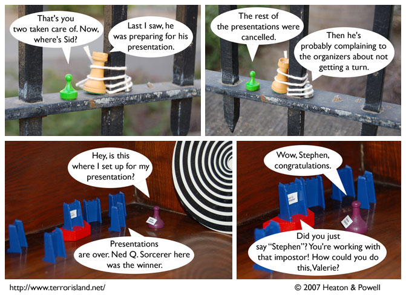

Strip #139
— Wednesday, May 2, 2007
They don’t hold up very well under interrogation
Notes, Thoughts, &c.
Ben’s Notes
In case it isn’t clear: the reason Ned has the nametag now is that he took it from Stephen when tying him up. This is also the reason that Stephen no longer has the nametag.
Lewis’s Notes
After this mistaken identity storyline, Ben and I plan to do an Accidental Marriage and Locked in a freezer. Man, I am so glad that every storyline there is has pretty much already been thought of and categorized on the internet.
Except this story, which is brand new.